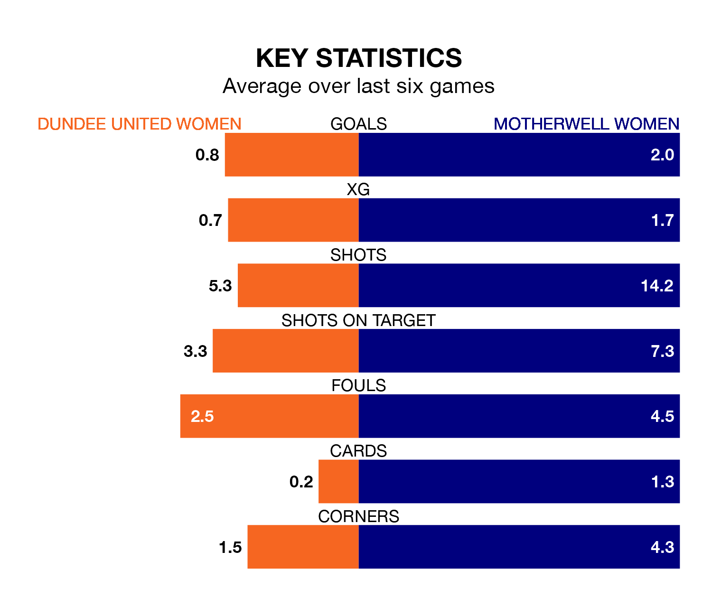

Dundee United Women welcome Motherwell Women to Gussie Park on Sunday lunchtime looking to pick up points to end their three-game losing streak.
Dundee United's struggles have left them with just three points from their last six SWPL 1 matches, while their opponents have earned four from a possible 18.
Dundee United are ninth in the table after 15 games, of which they have won three and drawn one, earning 10 points.
Motherwell are one place ahead of the home side in eighth, with four wins and one draw putting them on 13 points.
With 15 goals in 15 games so far this season, Dundee United are the league's third-lowest scorers with 1.0 goals per game. And they are conceding more than average, letting in 54 goals at a rate of 3.6 per game.
The visitors are also below average scorers, with 1.6 goals per game, compared to a league average of 2.2. They have conceded 2.7 goals per game.
In Carla Boyce, Motherwell have one of the league's most on-form strikers so far this season. She has notched seven goals in 15 appearances, to sit ninth in the scoring charts.
Her goal rate of one every 130 minutes is quicker than that of Rachel Todd, Dundee United's top scorer with a goal every 220 minutes, and a total of six goals in 15 games.
Over the last year, Dundee United and Motherwell have played each other on four occasions. Dundee United won one of them, Motherwell two, and they drew once.
On average, Dundee United scored 1.5 goals and Motherwell 2.8 in those matches.
Their last meeting was on October 15, when Motherwell won 6-0 at home.
Dundee United's last match was on December 10, a 3-2 loss against Montrose Women, with Maya Knight and Todd getting the goals for Dundee United.
Motherwell lost 5-0 against Rangers Women last time out, also on Sunday.
